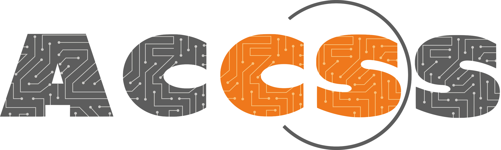

Date
The 5th PhD Workgroup Netherlands will take place in Leiden on September 2nd, 2026.
Registration
The registration is free and includes coffee breaks, lunch, and drinks.
Venue
The workgroup will be held in Room BW.0.18 of Gorlaeus Gebouw, Leiden University.
Program
| Time | |
|---|---|
| 10:00 - 10:30 | Welcome coffee & Opening |
| 10:30 - 11:00 | Talk: TBD Speaker: Cristian Daniele (TNO) Topic Introduction |
| 11:00 - 11:30 | Talk: Can LLMs produce an infinite poem? Speaker: Vincent Cellucci (Leiden University) LIACS external PhD candidate and poet Vincent Cellucci will contextualize and perform from his recent project, resurrection (2024-2026), which has incorporated and tested the limits of LLMs. He hopes to collect some human-generated couplets from the audience! |
| 11:30 - 12:00 | Talk: TBD Speaker: Sengim Karayalcin (Leiden University) Topic Introduction |
| 12:00 - 13:30 | Lunch & Photo |
| 13:30 - 14:00 | Talk: Empirical evaluation of multiple graphical threat models Speaker: Nathan Schiele (Leiden University) Threat modeling (TM) is an important aspect of risk analysis and secure software engineering. Graphical threat models are a recommended tool to analyze and communicate threat information. However, the comparison of different graphical threat models, and the acceptability of these threat models for an audience with a limited technical background is not well understood, despite these users making up a sizable portion of the cybersecurity industry. We seek to compare the acceptability of three general, graphical threat models, Attack-Defense Trees (ADTs), Attack Graphs (AGs), and CORAS, for users with a limited technical background. We conducted a laboratory study with 38 bachelor students who completed tasks with the three threat models across three different scenarios assigned using a Latin square design. Threat model submissions were qualitatively analyzed, and participants filled out a perception questionnaire based on the Method Evaluation Model (MEM). We find that both ADTs and CORAS are broadly acceptable for a wide range of scenarios, and both could be applied successfully by users with a limited technical background; further, we also find that the lack of a specific tool for AGs may have impacted the perceived usefulness of AGs. We can recommend that users with a limited technical background use ADTs or CORAS as a general graphical TM method. Further research on the acceptability of AGs to such an audience and the effect of a dedicated TM tool support is needed |
| 14:00 - 14:30 | Talk: TBD Speaker: Jafar Akhoundali (Leiden University) Topic Introduction |
| 14:30 - 15:00 | Talk: Reinforcing Active Automata Learning with Fuzzing for RESTful APIs Speaker: Amrita Ray Modern software increasingly talks to other software through web APIs, yet how these systems actually behave is often poorly documented, so that we can see what goes in and what comes out, but not the states in between. This thesis explores whether two automated testing techniques, automata learning and fuzzing, can be combined to build a clear behavioural map of such a system without access to its internals. Using a controlled example and a real chat-server deployment, the work shows what each technique can and cannot contribute, and clarifies exactly where the combination helps. The result is a more automated way of inferring the behavioral model of an opaque system. |
| 15:00 - 16:00 | Goodbye Drinks |
Contact Us
For questions or ideas, contact Cristian Daniele or Shuang Sun.
Sponsors
